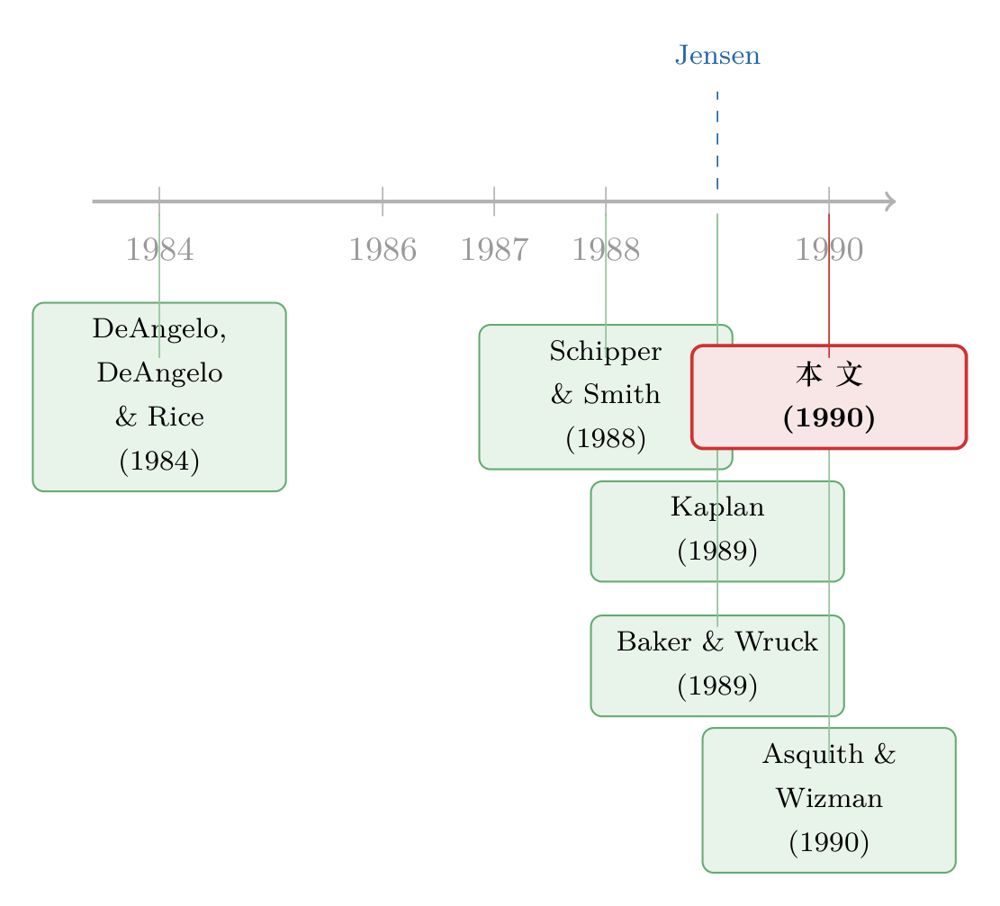

杠杆买断那 42% 的溢价，到底是谁掏的钱？
本文读的是 Palepu (1990, Journal of Financial Economics)：作者把上世纪八十年代关于杠杆买断 (leveraged buyout, LBO) 的一连串实证研究拢到一起，回答一个争得不可开交的问题——买断给原股东带来的那 42% 溢价，究竟是「创造」出来的新价值，还是从员工、纳税人、债权人兜里「搬」过来的财富。结论是：主要来自买断后实打实的经营改善，而非大规模的财富转移。
1 一桩争论：野蛮人，还是炼金术士？
上世纪八十年代的美国资本市场，最刺眼的词莫过于「杠杆买断」。一群私人投资者，用债务融资把一家上市公司或某个事业部整个买下来，私有化。莱因哈特那本《门口的野蛮人》后来把这个画面钉进了大众记忆里：高负债、裁员、拆分、套现走人。
可是，事情真有这么简单吗？
先把事实摆出来。无论批评者还是赞成者，都承认一件事：买断给原来的股东赚了一大笔。Kaplan (1989a) 统计了 1980–1986 年间完成的 76 桩管理层买断 (management buyout, MBO)，原股东相对买断前两个月的股权价值，拿到了 42% 的中位数溢价。DeAngelo, DeAngelo and Rice (1984)、Lehn and Poulsen (1989) 等人也报告了类似的数字。这个量级，不是噪声，是真金白银。
于是，一个自然的问题就成了整场争论的核心：这 42% 是从哪儿来的？
这正是 Palepu (1990) 这篇综述要替我们审清的案子。它不提出新模型，也不跑新回归，而是把当时散落在各篇论文里的证据收拢起来，像法官那样，把「嫌疑人」一个个传上来对质。
2 五个嫌疑人
买断溢价的来源，作者列出了五种可能：
$$ \text{Premium} \;=\; \underbrace{\;?\;}_{\text{operating}} + \underbrace{\;?\;}_{\text{employees}} + \underbrace{\;?\;}_{\text{taxpayers}} + \underbrace{\;?\;}_{\text{bondholders}} + \underbrace{\;?\;}_{\text{overpayment}} $$
（这里的 ? 只是为了把账目拆开看；公式本身不重要，重要的是后面每一项各占多少。）
具体说，五个来源是：(1) 经营业绩改善；(2) 来自员工的转移；(3) 来自纳税人的转移；(4) 来自原债权人的转移；(5) 后续投资者的系统性高估（即「买贵了」）。如果是第一项，那 LBO 是炼金术，创造了价值；如果是后面几项，那它就是零和甚至负和的财富再分配。整篇文章，就是逐一给这五项称重。
3 真正关键的一步：业绩确实改善了
先看第一个嫌疑人，也是最关键的那个——经营改善。
理论上的故事来自 Jensen (1989) 那篇著名的《公众公司的消亡》。它的逻辑是：买断同时拧动了三个旋钮。高杠杆逼着经理把现金流吐出来还债，堵死了乱投资的口子；管理层持股大幅上升，让经理和股东利益绑在一起；大额股权投资者进董事会，主动盯梢。这三件事合起来，应当让买断后的经营和投资决策优于做公众公司时。（关于「现金必须还出去」这条主线，可参见《现金为什么一定要「还」出去？——四十年后，重读 Jensen 的自由现金流》。）
证据呢？Kaplan (1989a) 分析了 48 桩 MBO，结果相当扎眼：相比买断前一年，买断后三年里营业收入 (operating income) 增长了 42%，营业收入/资产比上升 15%，营业收入/销售额比上升 19%。更猛的是净现金流——从买断前一年到买断后两年，平均增长了 96%，净现金流/资产上升 79%，净现金流/销售额上升 43%。这些改善在剔除同行业同期变化之后依然存在。而且，原股东拿到的那笔溢价，和买断后的经营改善强相关——这正暗示：业绩改善，就是溢价的源头之一。
接着，Smith (1990) 用 58 桩 1977–1986 年的 MBO 复证了这一点：每名员工、每美元资产对应的经营现金流都上升了，来源之一是更好的营运资本管理——存货周转期和应收账款回收期都缩短了。关键是，Smith 没有发现这些改善来自削减「酌量性支出」（如维护、广告、研发）。换句话说，不是杀鸡取卵。
然后是 Lichtenberg and Siegel (1990)，他们换了一个完全不同的视角：不用公司层面的财务数据，而用美国普查局工厂层面的全要素生产率 (total factor productivity)，样本约 1,000 家工厂。主要发现是 LBO 工厂的生产率在买断前后都高于非 LBO 工厂，且买断后第 1、2 年相对第 −1 年有显著上升。不过他们的结果不太稳：把样本切成早期（1981–82）和晚期（1983–86），早期那批反而看不到生产率提升。这个内部矛盾，文章自己也没能解释。（这篇工厂层面的证据，详见《杠杆买断之后，工厂里到底发生了什么？》。）
4 一个绕不过去的反驳：是「改善」，还是「本来就被低估」？
到这里，故事看起来很顺：买断带来经营改善，改善撑起了溢价。
但真正关键的一步在于——你怎么知道这些改善是买断引起的，而不是本来就会发生？
这就是「事前低估假说」(undervaluation hypothesis) 的挑战。它说：这些公司本来就会变好，股市只是没看出来、给低估了；买断者付溢价，不过是捡了市场定价的便宜，跟组织变革毫无关系。如果这个假说成立，那么买断的具体组织变化，与后续业绩变化之间，应当没有关系。
于是反转出现在 Baker and Wruck (1989) 对 O.M. Scott & Sons 公司的临床式个案研究里。他们发现，正是高杠杆、更重的绩效奖金、LBO 合伙人的主动监督、以及管理层持股的上升，共同推动了 Scott 经营和投资政策的改善。Scott 的经理人自己也认为，这些买断后的组织变化，让他们做成了当年还是 ITT 一个事业部时根本做不成的事。
更要紧的是统计上的呼应：Smith (1990) 在更大的样本里发现，买断后的经营改善与买断本身的特征（债务水平变化、管理层持股变化）相关。这恰恰是低估假说预测「不该有」的关系。证据于是站到了「组织变革」这一边——业绩改善，归因于买断本身。
5 剩下四个嫌疑人，逐一排除
第一个嫌疑人（经营改善）成立了。那其余四项「财富转移」呢？作者一个个排查，结论几乎都是：要么没有，要么很小。
员工。 批评者最爱说 LBO 是「拿员工的钱给股东」。可 Kaplan 报告，买断前一年到后一年，员工人数的中位数变化是 +0.9%；剔除大额剥离后是 +4.9%。Lichtenberg and Siegel 也没发现蓝领人数显著下降，反倒发现生产工人的年均薪酬从买断前一年到后两年显著上升。当然，按行业调整后，买断公司的雇佣增速确实偏低（Kaplan 全样本 −12%，无剥离子样本 −6.2%），但这更像是「增长更慢」或「用工更有效率」，而非简单的财富剥夺。
纳税人。 这一项有意思。LBO 确实少缴税：利息可抵税，资产增记后折旧也增加。Kaplan (1989b) 估算，利息抵扣的价值中位数相当于溢价的 14%–130%，折旧抵扣约 30%，合起来 21%–143%。买断后头两年，税款/营业收入的中位数从 20% 掉到 1%——也就是说中位数公司几乎不缴联邦税。可这只是单家公司的账。Jensen, Kaplan and Stiglin (1989) 把整个链条算了一遍：原股东的资本利得税、经营现金流增加带来的税、放贷人收到利息的税、买断后资产出售的资本利得税……加总之后，LBO 反而让美国财政部税收现值增加约 61%。在每年 750 亿美元的 LBO 总量下，财政部第一年多收约 90 亿、未来净税收现值每年约 165 亿美元。纳税人不但没亏，还赚了。
债权人。 这是公司债研究者最关心的一项。杠杆骤增确实会把风险甩给原有债权人。Asquith and Wizman (1990) 分析了 1980–1988 年间 47 桩买断里的 149 只公开债券，发现原债权人在买断时遭受了统计显著的 −2.1% 异常损失。但关键在于规模——这点损失只占原股东 42% 回报的约 3%。更妙的是，损失只落在没有保护性契约的债券上；而带有强保护契约（防止意外加杠杆）的债券，在买断公告时反而上涨。也就是说，那些「裸奔」的债券，本就在发行时被定价补偿过额外风险。（这条「契约触发条款」的思路，后来长成了一个独立话题，见《把「降级就还钱」写进债券契约：一个让股东自己戴上镣铐的故事》。）
后续投资者高估。 最后一个可能：会不会是买断方系统性买贵了，把钱拱手让给原股东？证据恰恰相反。Kaplan (1989a) 考察 25 桩有买断后股权估值的交易，买断方的股权投资者在约三年里赚到了 42% 的平均超额收益，跑赢一个同等杠杆的市场指数。Kaplan and Stein (1990) 还发现一件反直觉的事：这些高杠杆交易的股权 beta 远低于「按杠杆该有的水平」——12 桩公开资本重组里，股权 beta 平均只从 1.0 升到 1.30（涨 30%），而标准的去杠杆-再加杠杆公式会预测 325% 的暴涨。解释是：LBO 在抬高财务风险的同时，降低了经营风险（资产 beta）。（这条「债很多、股却没那么险」的暗线，详见《他们借了九成的债，可股票却几乎没变得更危险》。）
五个嫌疑人审完，结论清晰：溢价的主梁是经营改善，财富转移即便存在也只是边角。
6 文献脉络
把这条线索捋一遍，会看到一个很「JFE 学派」的演进。最早 DeAngelo, DeAngelo and Rice (1984) 在《Going private》里记录了私有化中小股东被「冻出」与原股东的财富效应；Schipper and Smith (1988) 开始算买断的公司所得税效应。真正把它拔到理论高度的是 Jensen (1989)——把自由现金流代理理论搬到 LBO 上，给出「高杠杆+高持股+主动治理」的解释框架。

随后是一波实证井喷，且大多发表在同一卷 JFE 上：Kaplan (1989a) 量出经营改善，Baker and Wruck (1989) 用 O.M. Scott 个案钉死「组织变革 vs 低估」之争，Smith (1990) 与 Lichtenberg and Siegel (1990) 从财务与生产率两个层面复证，Asquith and Wizman (1990) 与 Kaplan and Stein (1990) 分别清算债权人损失与风险之谜。Palepu (1990) 这篇综述，就站在这波浪潮的「收口」位置——它不是起点，而是替这场争论做的一次中场总结，并顺手列出了下一程的研究清单：长期投资的影响、艰难经济环境下的表现、财务困境的频率与代价。（关于困境本身如何重塑组织，可参见《债，不只是用来还的——它逼着一家公司重新想清楚自己该怎么活》。）
7 评论与延伸（Q&A + 研究方向）
（a）几个可能的疑问
Q：这是一篇综述，没有自己的数据，凭什么值得读？
它的价值不在「新结果」，而在「把账算清」。八十年代关于 LBO 的争论高度情绪化，这篇文章的贡献是把「溢价来自哪里」拆成五个可证伪的子问题，再用当时最好的证据逐一称重。它给出的是一张「证据地图」，而非又一块拼图。
Q：样本几乎全来自 1979–1986 年的繁荣期，结论还站得住吗？
这正是作者自己最坦诚的软肋。他反复强调，证据「主要来自美国相对繁荣的时期」，而 LBO 在衰退里会不会引发大面积财务困境，当时无人知晓。事后看，八十年代末到九十年代初确实出了一批高杠杆交易的违约，这恰好落在作者预留的研究空白里。
Q：管理层买断里，经理既当裁判又当运动员，会不会用内幕信息低价偷走公司？
这是低估假说的「阴谋版」。作者在脚注里给了两道缓冲：其一，经理必须把业绩预测分享给竞争性外部竞标者；其二，竞标由不参与买断的外部董事委员会评估。Kaplan (1989a) 报告，
46桩拟议 MBO 里有34桩最终被非管理层竞标者拿下——这说明价格是被市场检验过的。
Q：「业绩改善」会不会只是把研发、维护这些长期投入砍掉换来的短期数字？
Smith (1990) 专门查过这一点，没有发现改善来自削减酌量性支出（维护、广告、研发）。配合 Baker and Wruck (1989) 关于管理层高持股「抑制短视」的论证，至少在这批样本里，改善更像是真效率，而非寅吃卯粮。当然，研发密集型公司本就很少做 LBO，这本身也是一种选择效应。
Q：债权人只亏 2.1%，是不是说「买断不伤债主」可以盖棺定论了？
不能。Asquith and Wizman 的结论是「平均很小」，但分布极不均匀：无保护契约的债券亏，有强契约的反而赚。而且 Marais, Schipper and Smith (1989) 用更小的样本得到的债权人回报「不显著」，且没有区分有无契约。所以正确的表述是「契约决定命运」，而非「债主毫发无伤」。
Q：买断后股权 beta 只涨 30%、远低于公式预测的 325%，这是不是好得不真实？
它确实反直觉，但有经济学解释：财务杠杆抬高了财务风险，组织变革却压低了经营风险（资产 beta），外加可能出售了高风险资产。两股力量相互抵消，于是观察到的股权 beta 涨幅被「吃掉」了一大半。作者也提醒：资本重组 (recap) 与 LBO 存在组织差异，把这个数字外推到全部 LBO 要谨慎。
（b）几个可能的研究问题与提案
-
LBO 在衰退中的债权人损失重估。【经济故事】Palepu 留下的最大空白，就是艰难环境下的表现。八十年代末的违约潮提供了一个天然的「压力测试」窗口：当宏观转冷，原债权人的
−2.1%损失会被放大到多少？契约保护的边际价值在衰退里是升还是降？【可行性】中。需要 LBO 交易清单 + 公开债券层面的事件回报（如今可用 TRACE 之外的历史债券价格库），识别策略沿用 Asquith-Wizman 的异常回报框架，按经济周期与契约强度做交叉。难点在早期债券价格数据稀疏。 -
外资持有人在被买断公司里的角色。【经济故事】八十年代的 LBO 文献几乎只看国内投资者。但跨境私募资本进场后，外资持股是否改变了买断后的监督强度与债权人保护？外资「赖着不走」还是「套现就跑」，会写出不同的治理结果。【可行性】中偏低。需要把 LBO 交易与外资持有人身份（如 13F/跨境持仓库）匹配，识别上可借助资本管制或可投资度变化做准自然实验，但买断后多为非上市，持仓披露稀疏是硬约束。
-
「业绩改善 vs 事前低估」的现代再检验。【经济故事】Baker-Wruck 用一个个案钉死了这场争论，但样本只有一家公司。能否用大样本、机器可读的买断后经营数据，把「组织变化特征 → 后续业绩」的关系做成横截面回归，并用同行业未买断公司做反事实？【可行性】高。Compustat + Capital IQ 的 LBO 退出/再上市样本已相当可观，识别可用倾向得分匹配或行业冲击工具变量。这是把一篇 1990 年的定性结论升级成稳健因果证据的直接路子。
-
财务困境频率与成本的「事后总账」。【经济故事】作者明确点名这是未解问题：LBO 到底有多频繁滑入困境，困境又烧掉多少钱？【可行性】高。结合违约/破产数据库与 LBO 清单，可估算条件违约率，并用 Wruck (1990) 式的框架量化困境的直接与间接成本，区分「私有化长存」与「速战速决」两类买断的命运差异（参见《LBO 到底是「速战速决」还是「从此私有」？》）。
8 我的判断
这篇文章最大的贡献，是在一片喧嚣里立了一根「证据的标杆」：它没有否认 LBO 的争议，却用可证伪的拆解证明——买断的主旋律是价值创造，而非财富掠夺。在「门口的野蛮人」叙事甚嚣尘上的年代，这是一次冷静、克制、且站得住脚的反驳。
但它对识别的担忧也写在脸上，而且作者自己最先承认。其一是时段偏误：几乎所有证据都采自繁荣期，把「LBO 安全」当成普遍结论是危险的——后来的事实也证明了这一点。其二是选择效应：会做 LBO 的，本就是现金流稳定、成长机会少的成熟公司，它们的改善有多少能外推到别处，并不清楚。其三是个案承重：决定性的「组织变革 vs 低估」之争，主要靠 Baker-Wruck 一家公司的临床证据钉死，统计上的支撑（Smith 那条相关性）偏弱。
后续我最想看到的，正是作者列出的那张清单在今天被补齐：用现代数据把困境频率、长期投资影响、以及艰难环境下的真实表现一项项算出来。更进一步，把「债、管理层持股、公司治理」这三件被 LBO 捆在一起的事拆开单独称重——到底是哪一个旋钮真正驱动了改善——这不仅对理解买断重要，对改善普通公众公司的治理同样有用。这，或许才是 Palepu 这篇综述留给后人最值钱的那句话。
参考文献
- Asquith, Paul and Thierry Wizman (1990). Event risk, wealth redistribution, and the return to existing bondholders in corporate buyouts. Journal of Financial Economics 27.
- Baker, George and Karen Wruck (1989). Organizational changes and value creation in leveraged buyouts: The case of the O.M. Scott & Sons company. Journal of Financial Economics 25, 163–190.
- DeAngelo, Harry, Linda DeAngelo and Edward Rice (1984). Going private: Minority freezeouts and stockholder wealth. Journal of Law and Economics 27, 367–401.
- Jensen, Michael (1989). Eclipse of the public corporation. Harvard Business Review Sept.–Oct., 61–74.
- Jensen, Michael, Steven Kaplan and Laura Stiglin (1989). Effects of LBOs on tax revenues of the U.S. Treasury. Tax Notes 42, 727–733.
- Kaplan, Steven (1989a). The effects of management buyouts on operations and value. Journal of Financial Economics 24, 217–254.
- Kaplan, Steven (1989b). Management buyouts: Evidence on taxes as a source of value. Journal of Finance 44, 611–632.
- Kaplan, Steven and Jeremy Stein (1990). How risky is the debt in highly leveraged transactions? Evidence from public recapitalizations. Journal of Financial Economics 27.
- Lehn, Kenneth and Annette Poulsen (1989). Free cash flow and stockholder gains in going private transactions. Journal of Finance 44, 771–788.
- Lichtenberg, Frank and Donald Siegel (1990). The effects of leveraged buyouts on productivity and related aspects of firm behavior. Journal of Financial Economics 27.
- Marais, Laurentius, Katherine Schipper and Abbie Smith (1989). Wealth effects of going private on senior securities. Journal of Financial Economics 23, 155–191.
- Palepu, Krishna G. (1990). Consequences of leveraged buyouts. Journal of Financial Economics 27, 247–262.
- Schipper, Katherine and Abbie Smith (1988). Corporate income tax effects of management buyouts. Working paper, University of Chicago.
- Shleifer, Andrei and Larry Summers (1988). Breach of trust in hostile takeovers. In: Alan Auerbach, ed., Corporate Takeovers: Causes and Consequences. University of Chicago Press.
- Smith, Abbie (1990). Corporate ownership structure and performance: The case of management buyouts. Journal of Financial Economics 27.